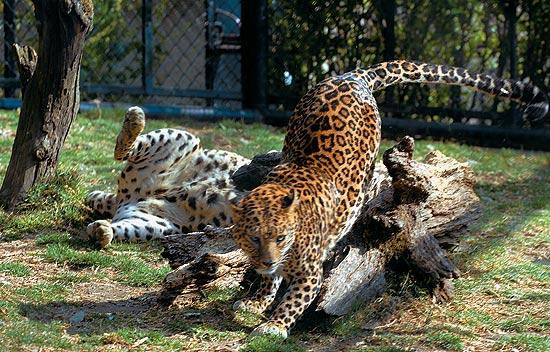
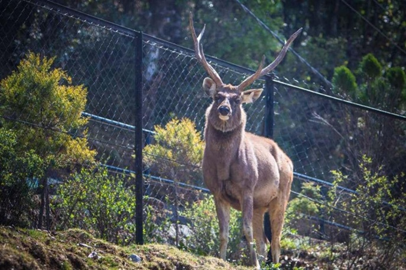
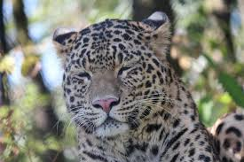
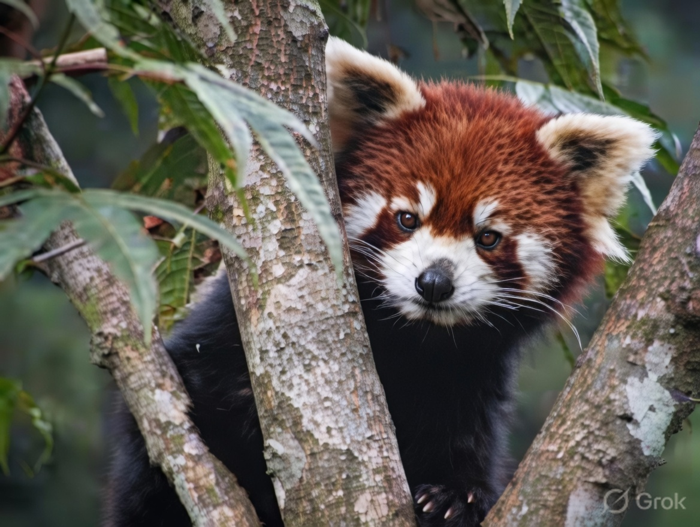
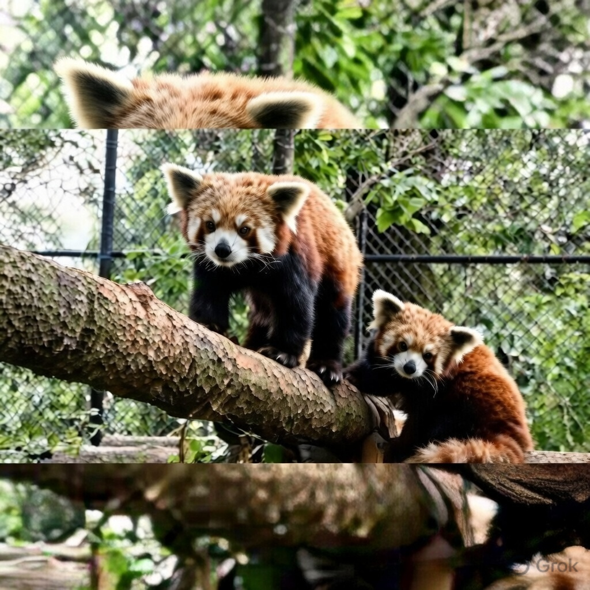
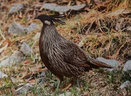
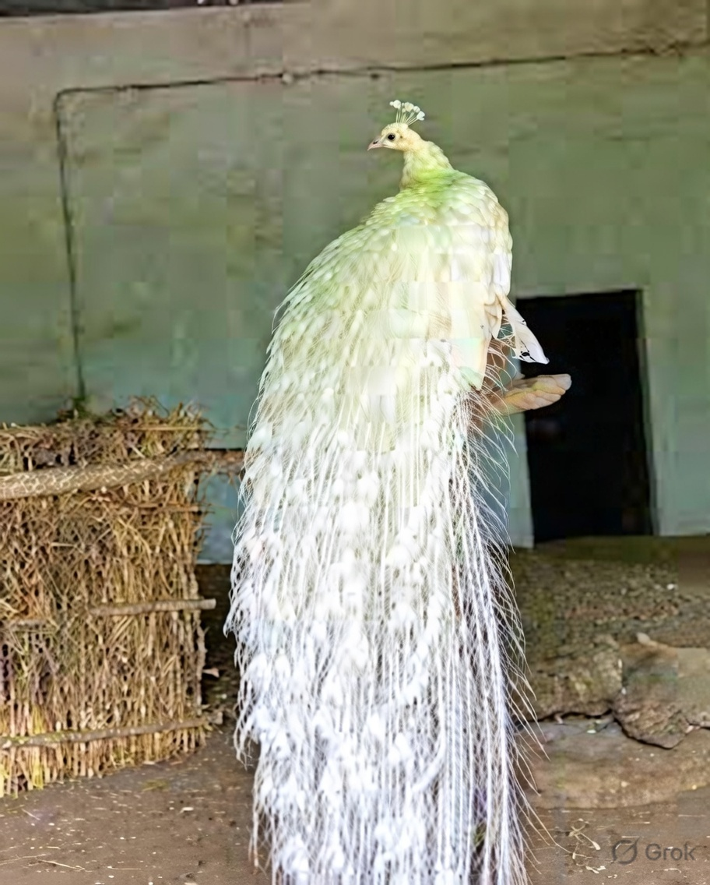
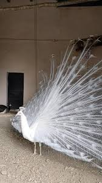
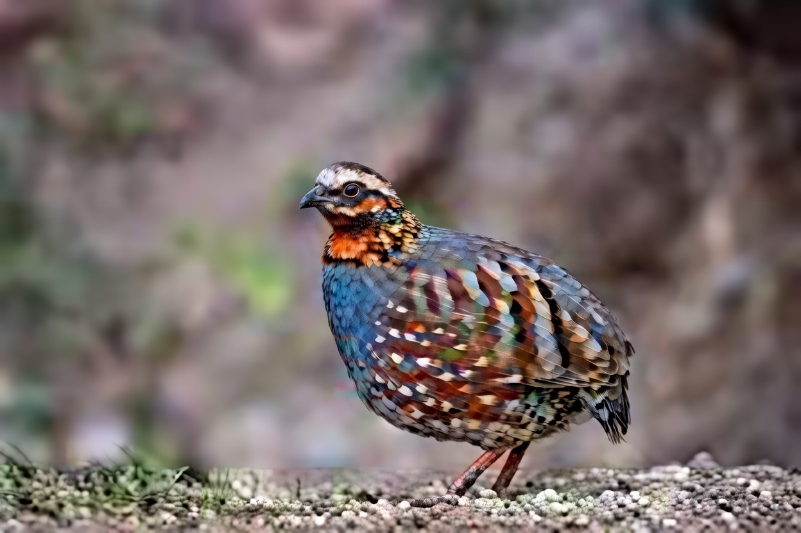
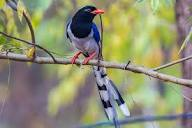
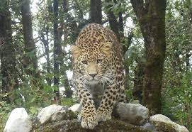
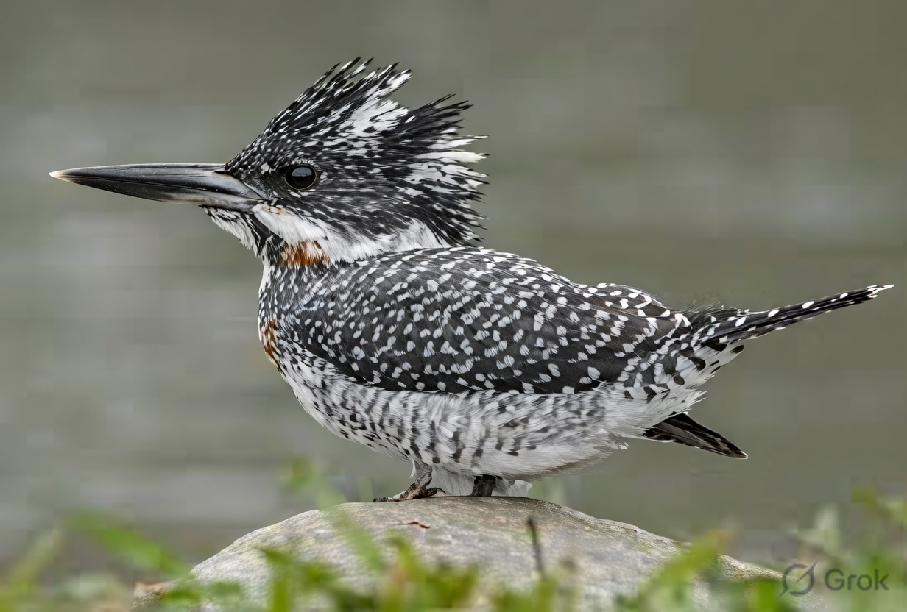
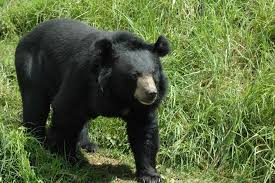
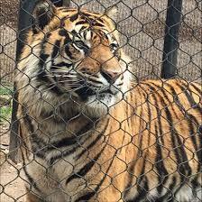
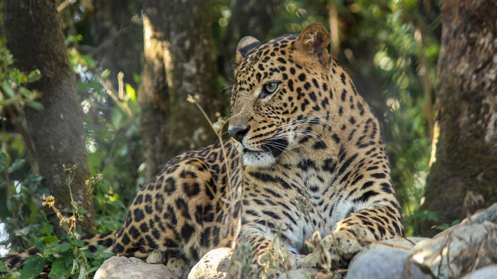
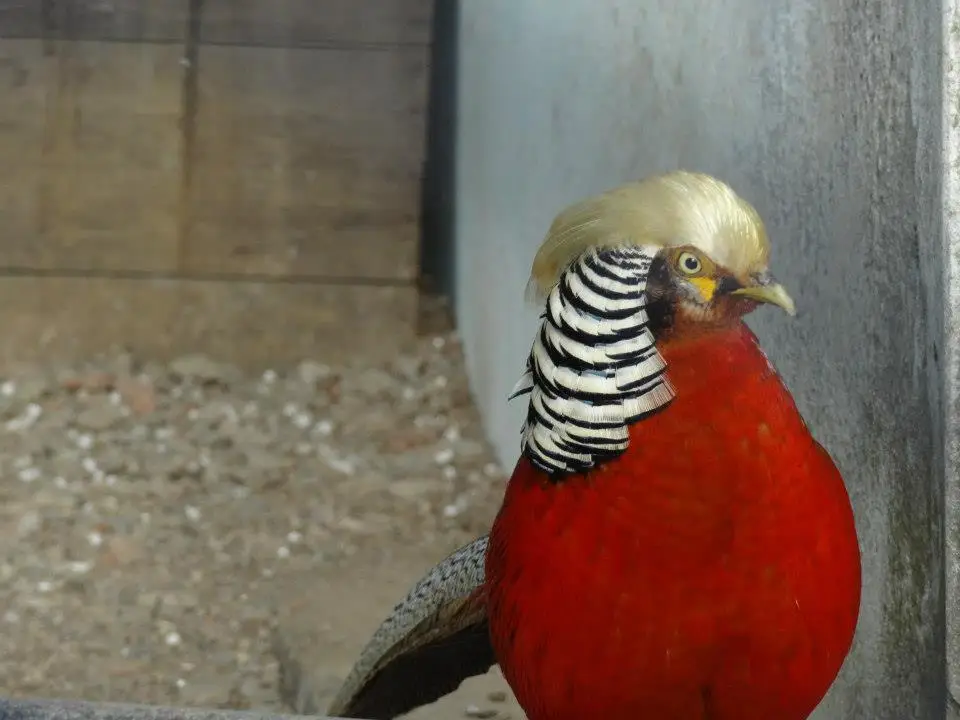
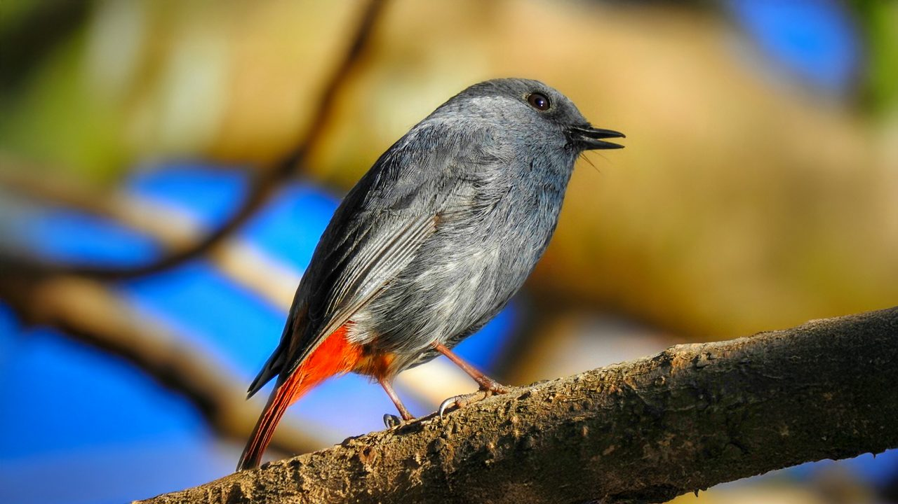

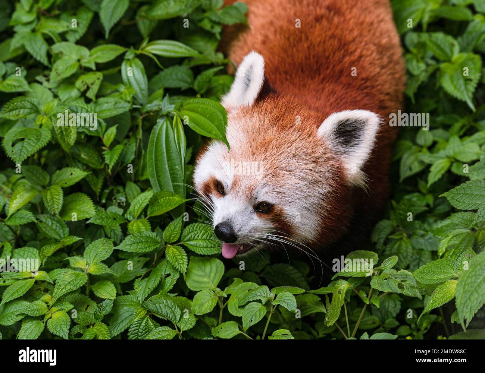
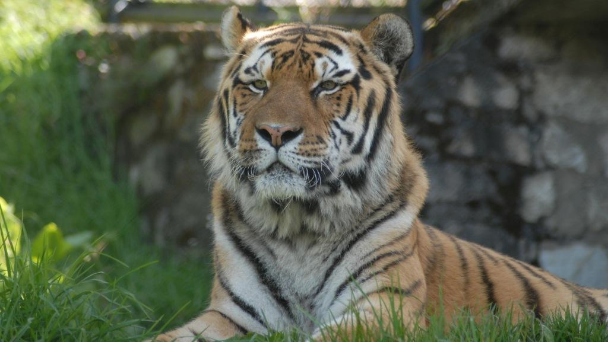
Pt. Govind Ballabh Pant High Altitude Zoo, commonly known as Nainital Zoo, is one of the most beautiful and well-maintained zoos in India. Located on the Sher Ka Danda hill at an altitude of about 2,100 meters, it offers stunning panoramic views of Naini Lake and the surrounding snow-capped Himalayan peaks. Established in 1985, the zoo is dedicated to conserving high-altitude Himalayan wildlife and serves as both an educational center and a sanctuary for endangered species.
Spread over 4.693 hectares, the zoo houses a wide variety of rare and endangered animals like the Himalayan Black Bear, Snow Leopard, Himalayan Goral, Musk Deer, Tibetan Wolf, Himalayan Monal, Cheer Pheasant, and Golden Pheasant. The natural forested environment and open enclosures make it feel more like a wildlife park than a traditional zoo. Visitors can also enjoy the ropeway ride to reach the zoo, adding to the overall experience of this peaceful and scenic spot in Devbhoomi.
March to June and September to November — pleasant weather, clear views of Himalayas, and active animals.
Rare Himalayan species, natural enclosures, panoramic lake & mountain views, ropeway access, and conservation programs.
Wear comfortable shoes (hilly paths), carry water, visit early morning for better animal sightings, and respect wildlife rules.
"Nainital Zoo is more than a place to see animals — it’s a quiet sanctuary where the spirit of the Himalayas breathes freely, reminding us of our duty to protect Devbhoomi’s wild beauty."